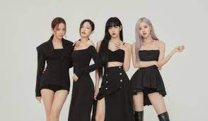
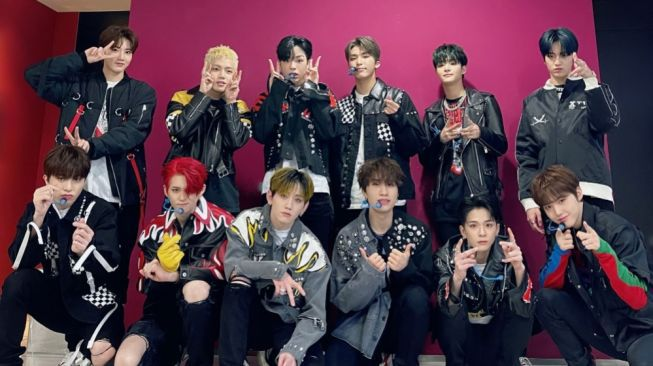
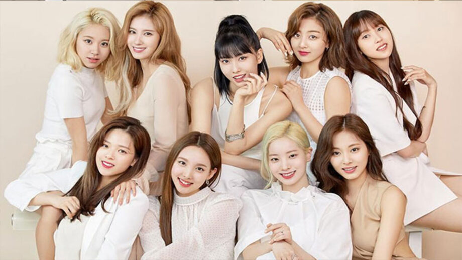

"Black Swan," the septet divulge their most harrowing shadow yet, one that any person who lives for making art faces: losing the passion for creating.

BLACKPINK’s well-known style of empowerment and badassery. The lyrics start with the members singing and rapping about how they’ve hit “rock bottom” before they let go of the toxic person who made their life so miserable. That’s when the members ask the other person “how you like that” now that they’re no longer under their control. The track goes on to reference “karma” and taking what’s theirs.

The song’s melody, lyrics, and soft tunes have gone viral on social media platforms, particularly TikTok. Moreover, DARARI also entered Spotify’s Global Top 200 chart by ranking #100 and is the first fourth-generation B-side track to do so.

"I Can't Stop Me" talks about the conflict and duality of the good and bad of uncontrollable desires.
The lyrics music and lyrics express their desire to distinguish themselves from other K-Pop girl groups. The term 'Monster' reflects their sparky and bold personalities. The pair are impressive in every shot.